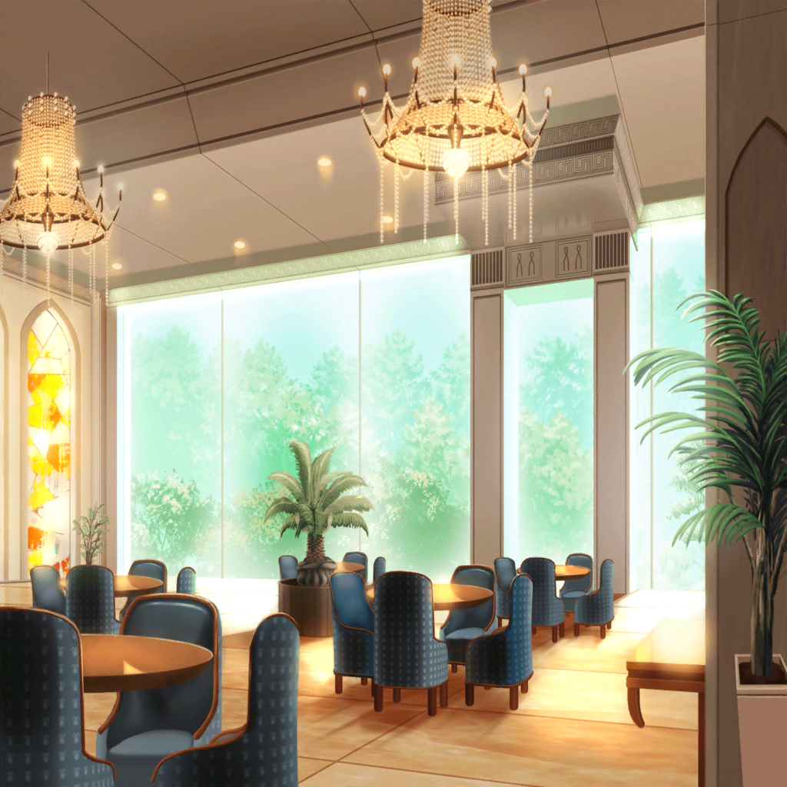

高級ホテル ラウンジ
こころ
この前のライブは大成功だったわね！
今日は黒服の人達が、打ち上げの用意をしてくれたわ！
思い切り楽しみましょうね！
薫
なるほど。
私達の打ち上げ会場としては、申し分ない場所だね
はぐみ
こんなすごいところで打ち上げできるなんて、
頑張った甲斐があったね、みーくん！
美咲
いやいや、普通はいくら頑張ったって
こんなところで打ち上げできないから。
海外アーティストじゃあるまいし
花音
こころちゃんって、ホントにスケールが違うね……
私達５人で貸し切りって言ってたし……
美咲
こんな広いところにあたし達だけって、
すっごい落ち着かないんだけど
こころ
みんな、なんでも好きなものを頼んでいいのよ！
ここのコックさんがなんでも作ってくれるって言ってたわ！
はぐみ
それじゃあ、はぐみはコロッケ！
美咲
ちょ、ちょっと！
こんな場所で、コロッケ？
自分ちでいくらでも食べられるでしょう？
はぐみ
だってはぐみ、コロッケ大好きなんだもん！
美咲
せめてメニューを見なよ
花音
そうだよね。
なんでもいいって言っても、メニューにないもの頼まれたら、
さすがに困っちゃうよね
こころ
そんなことないわ。
ここのコックさんなら、きっとなんでも作ってくれるわよ
薫
なるほど、それは頼もしいね。
シェフ！
私は何か、儚いものをもらおうかな？
美咲
困ってるから……シェフが困ってるから！
儚い料理って一体、何なの？
こころ
そうね……あ！
あたし、ふ菓子って儚い感じがするわ！
薫
それじゃあ、それを１つ頼むよ
美咲
ふ菓子っ！？
ここで、ふ菓子！？
花音
み、美咲ちゃん……
私達はどうしようか……？
美咲
え、えっと……
とりあえずメニュー見てみましょっか？
花音
メニューってこの革張りのやつだよね？
……あ。
こ、これ見て、美咲ちゃん……
美咲
う……
これって……フランス語？
ヤバ……何が書いてあるのかすらわからない……
花音
ど、どうしよう……
手がかりがなさすぎて、
どれを選んだらいいか全然わからないね……
こころ
美咲と花音はまだ悩んでいるの？
早く注文を終わらせて、打ち上げを始めましょう
美咲
そ、そうしたいんだけど……
ていうか、こころはもう頼んだの？
こころ
ええ！ あたしはもう頼んだわ！
あと注文してないのは、美咲と花音だけね
こころ
あっ！ そう言えばミッシェルの注文がまだだったわ！
はぐみ
そっか〜！
けどミッシェル、遅いね？
打ち上げ、来ないのかな……？
美咲
あぁー……
み、ミッシェルは、もしかしたらあとで来るかもって言ってたよ
はぐみ
ホントに！？
やったー！
薫
はぐみは本当にミッシェルが好きなんだね。
神出鬼没なミッシェルのことさ、今にもそのシャンデリアから
おりてくるかもしれないよ
美咲
（ムリムリムリ……）
こころ
それならミッシェルの好きなものを
頼んでおかないといけないわね！
はぐみ
うん、そうしよーっ！
けど、ミッシェルの好きなものってなんだろ？
みーくん知ってる？
美咲
う～ん……なんだろ？
あたしもそこまでは、わからないかな……
薫
ミッシェルはクマだから、やっぱり……鮭じゃないかな？
はぐみ
あ、さすが薫くん！
確かにウチの居間に、クマが鮭をくわえた木の置物があるもん！
きっとそうだよ！
こころ
それじゃあ、ミッシェルには鮭をお願いしておくわ！
はぐみ
これできっと、ミッシェルも喜ぶよね？ みーくん
美咲
あー……うん、そう……だね
こころ
それじゃあ、あとは美咲と花音の注文が決まれば、
打ち上げが始められるわね！
花音
えーっと、えーっと……
それじゃあ、私はこの１番上のやつで、お願いします！
美咲
あたしも、花音さんと一緒で……
美咲
……あのさ、こころ？
参考までにこころは何を注文したわけ？
こころ
あたしはラムネよ！
ソーダ味のラムネ！
薫
なるほど、ラムネとは気づかなかったよ。
こころらしい素晴らしいチョイスだね
はぐみ
ラムネいいなー！
はぐみにも、１個ちょうだいっ！
こころ
もちろんよ！
みんなで食べましょう！
美咲
ていうか……
コロッケと、ふ菓子と、ラムネ……
そして鮭……
美咲
……ホントに、このホテルでやる必要あった？
こころ
これで全員注文は終わったわ！
さあ、打ち上げを始めましょう！